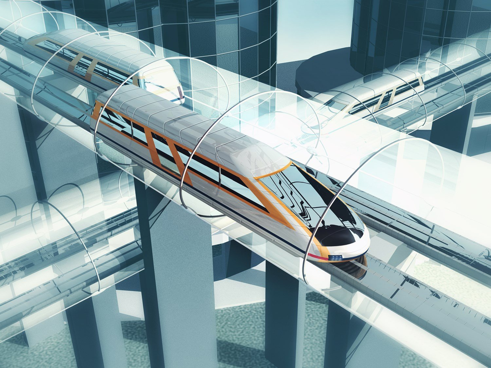

Hyperloop (гиперпетля) – это новый вид наземного транспорта, который позволит пассажирам перемещаться между локациями со скоростью свыше 1100 км в час. Если подумать, то футуристическая концепция Hyperloop – если будет возведена – произведет самую настоящую транспортную революцию. Только представьте: пассажиры садятся в капсулы, которые по герметичным трубам перемещают их в пункт назначения быстрее самолетов. Работает Hyperloop на электрическом двигателе и магнитной левитации. Однако несмотря на то, что это выглядит как научная фантастика, Hyperloop скоро станет реальностью.
